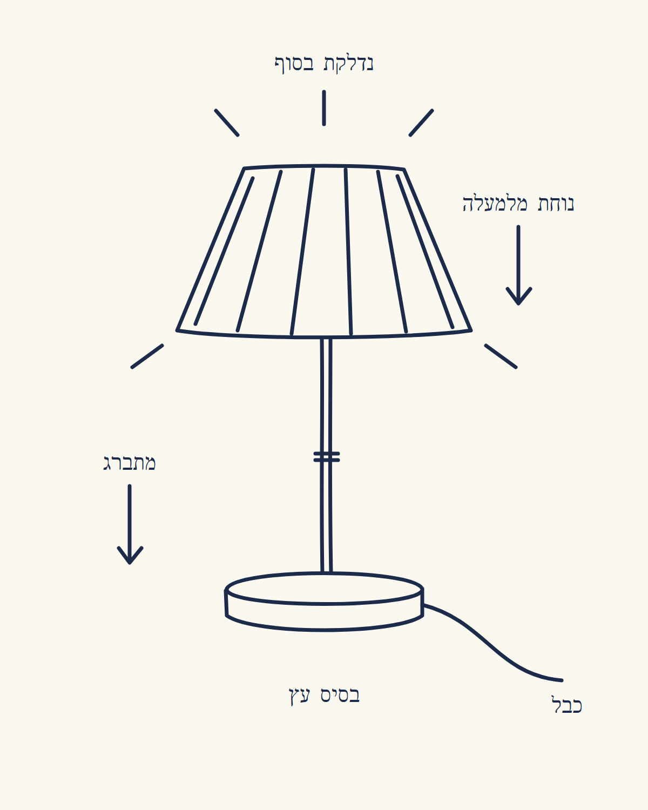
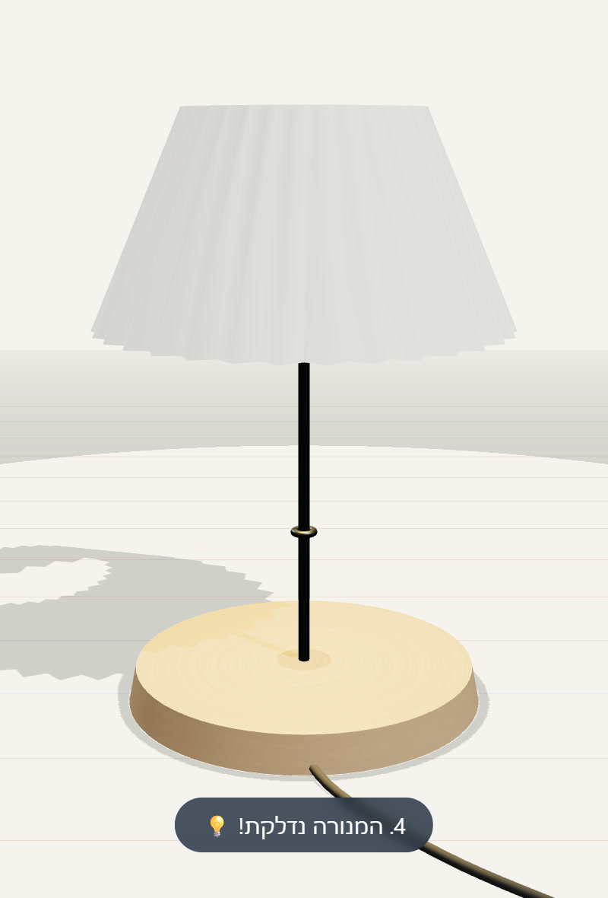
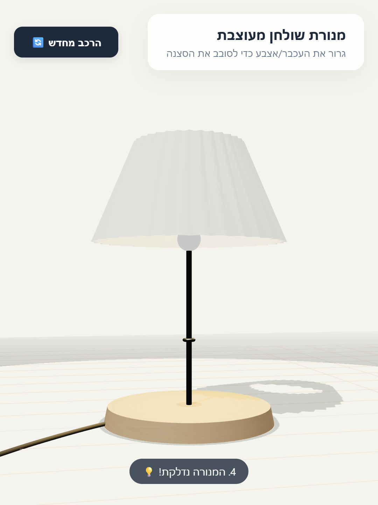

ציור על דף?
Gemini בונה אותו בתלת-ממד
רהיט שאתם מתכננים, מוצר לעסק, ציור של הילד. מצלמים, שולחים ל-Gemini עם בקשה אחת, ומקבלים דגם תלת-ממד על המסך: הוא מרכיב את עצמו, ואפשר לסובב אותו עם האצבע.
התוצאה האמיתית
ציירנו מנורת שולחן בעט, עם חצים של מה זז. שלחנו ל-Gemini את התמונה ואת הבקשה שלמטה, ואחרי 64 שניות קיבלנו דף שבו המנורה מרכיבה את עצמה: בסיס עץ נוחת, מוט מתברג, האהיל יורד, והיא נדלקת. הרצנו ב-Gemini (gemini-3.5-flash, דרך ה-API החינמי), 9.11.2026. באפליקציה התוצאה תהיה קצת שונה.



מימין לשמאל: הציור שלנו, מה ש-Gemini בנה, ואותה מנורה אחרי שסובבנו אותה. את הכפתור ״הרכב מחדש״ הוא הוסיף לבד.
מה צריך
חשבון Google ו-Gemini. לפי Google, Canvas זמינה לכל משתמשי Gemini, וצריך להיות מחוברים. במנוי בתשלום מקבלים מודל חזק יותר, אבל זה לא תנאי. את הפרויקטים אפשר לפתוח גם באפליקציה לנייד.
איך עושים
- מציירים על דף. ציור פשוט מספיק. מוסיפים חצים ומילים של מה זז ואיך: ״נוחת מלמעלה״, ״מתברג״, ״נדלקת בסוף״.
- מצלמים את הציור.
- נכנסים ל-gemini.google.com ובוחרים Canvas מתחת לתיבת הכתיבה.
- מצרפים את התמונה (Add files) ומדביקים את הבקשה שלמטה. מחליפים את המנורה במה שציירתם, ואת החומרים בחומרים שלכם.
- הדגם נפתח בתצוגה. גוררים עם האצבע כדי לסובב.
- משהו לא יפה? כותבים לו מה לתקן: ״האהיל גדול מדי״, ״תאט את ההרכבה״.
זה ציור שלי של מנורת שולחן. תהפוך אותו לסצנה תלת-ממדית חיה: 1. המנורה מרכיבה את עצמה לפי החצים בציור: הבסיס מופיע, המוט מתברג, האהיל נוחת מלמעלה, ובסוף היא נדלקת. 2. חומרים אמיתיים: בסיס עץ, מוט מתכת, אהיל בד עם קפלים, כמו בציור. 3. אפשר לסובב אותה עם האצבע או העכבר. 4. רקע בהיר ונקי, כמו צילום מוצר. תן דף HTML אחד, מוכן לפתוח.
עוד רעיונות לצייר
- רהיט לפני שמזמינים מנגר: ״מדף שהמדפים שלו נכנסים אחד אחד״.
- מוצר לעסק: ״קופסה שנפתחת והמוצר עולה ממנה״.
- ציור של הילד: ״הרובוט שלו הולך על השולחן״.
כן, אבל
זה דגם על המסך, לא קובץ להדפסה בתלת-ממד ולא תוכנית עבודה לנגר. אצלנו הצללים יצאו קצת מחוספסים. והתוצאה משתנה מהרצה להרצה: אם הראשונה לא יפה, מבקשים תיקון.
מקורות
- Google, Gemini Canvas: gemini.google
- Google, עזרה: Canvas ב-Gemini: support.google.com